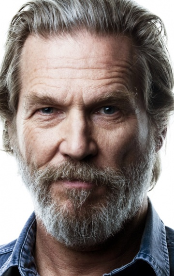
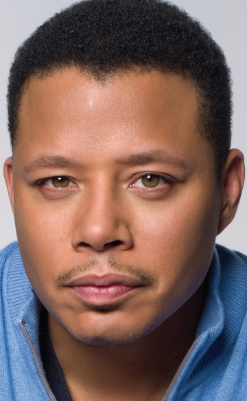

- В главных ролях:

- 
- 
Роберт Дауни мл.
Джефф Бриджес
Гвинет Пэлтроу
Терренс Ховард
год 2008
страна США, Канада
слоган «Героями не рождаются. Героями становятся»
режиссер Джон Фавро
сценарий Марк Фергус, Хоук Остби, Артур Маркам
продюсер Ави Арад, Кевин Файги, Виктория Алонсо
оператор Мэттью Либатик
композитор Рамин Джавади
художник Дж. Майкл Рива, Дэвид Ф. Классен, Ричард Ф. Мейс
монтаж Дэн Лебентал
жанр фантастика, боевик, приключения
бюджет $140 000 000
маркетинг $75 000 000
сборы в США $318 604 126
сборы в мире + $266 762 121 = $585 366 247
сборы в России $9 491 200
DVD в США $174 751 622
зрители 50 млн.
премьера (мир) 14 апреля 2008
премьера (РФ) 1 мая 2008, «UPI»
релиз на DVD 30 сентября 2008, «Юниверсал Пикчерс Рус»
релиз на Blu-ray14 апреля 2009, «Юниверсал Пикчерс Рус»
возраст 12+
рейтинг MPAA рейтинг PG-13
время 121 мин. / 02:01
7.9
7.9
Миллиардер-изобретатель Тони Старк попадает в плен к Афганским террористам, которые пытаются заставить его создать оружие массового поражения. В тайне от своих захватчиков Старк конструирует высокотехнологичную киберброню, которая помогает ему сбежать. Однако по возвращении в США он узнаёт, что в совете директоров его фирмы плетётся заговор, чреватый страшными последствиями. Используя своё последнее изобретение, Старк пытается решить проблемы своей компании радикально...
Трейлер